Cookbook Celebration (reader submitted images)!!
I've gotten SUCH AMAZING FEEDBACK on my cookbook from you guys!! #1 best seller on Amazon in a day! It makes me so happy to hear that you guys are loving the hard work I poured into the book. I get even happier to see pictures of yummy deliciousnessssss.
Check out these posts that some awesome readers have tagged me in! - Then check out their accounts. :3
If you tag me on Instagram/twitter/whatever I'll add your picture to this collection and link back to your account!
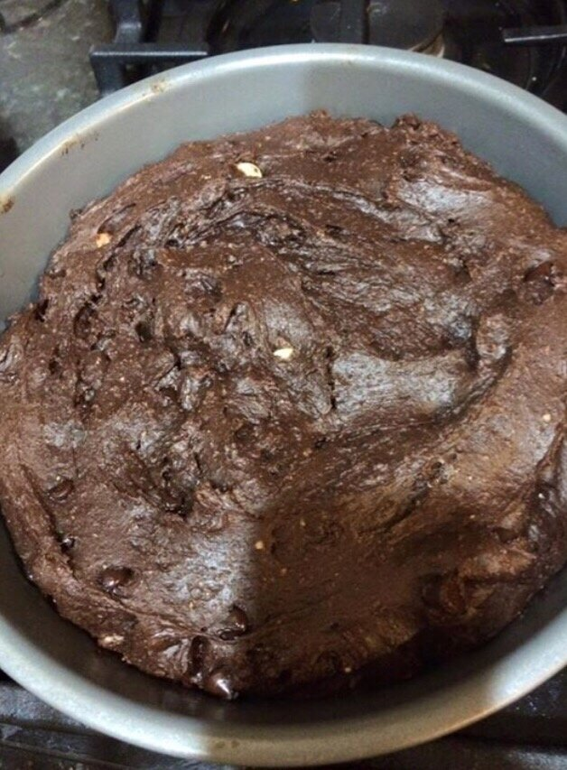
Peanut Butter Crunch Brownies || posted by Tam LC
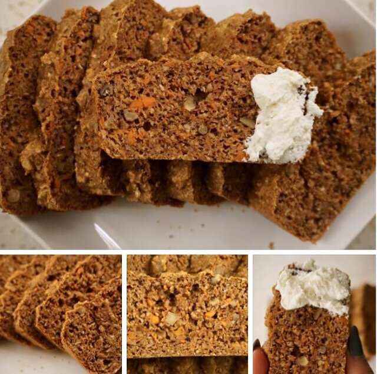
Carrot Cake Bread || posted by Em Dunc on Instagram and Youtube
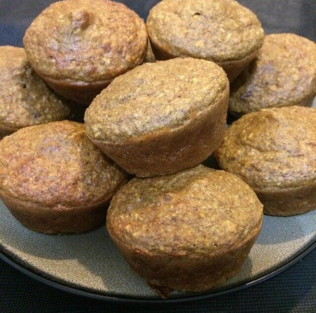
Carrot Cake Bread || posted by Catherine L. on Instagram
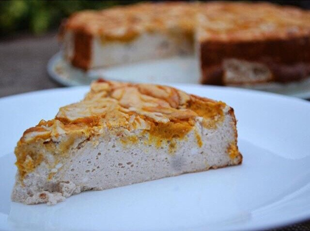
Pumpkin Swirl Cheesecake || posted by Samantha L. on Instagram
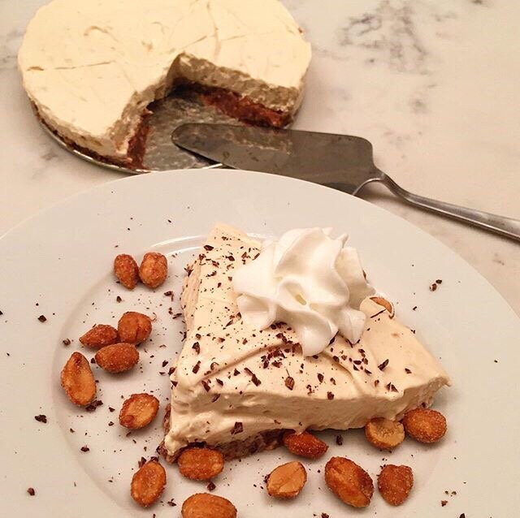
No Bake Whipped Peanut Butter Pie || posted by Dena H on Instagram
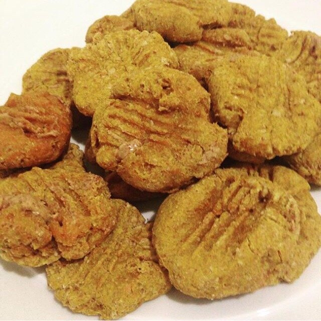
Peanut Butter Stuffed Pumpkin Cookies || posted by Sarah on Instagram
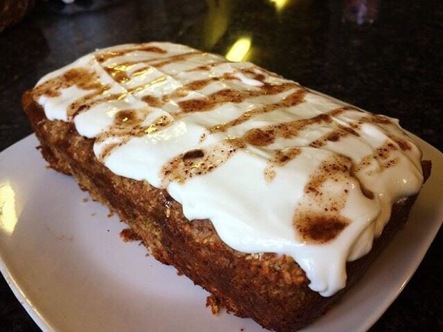
Carrot Cake Bread || posted by Julianna on Instagram
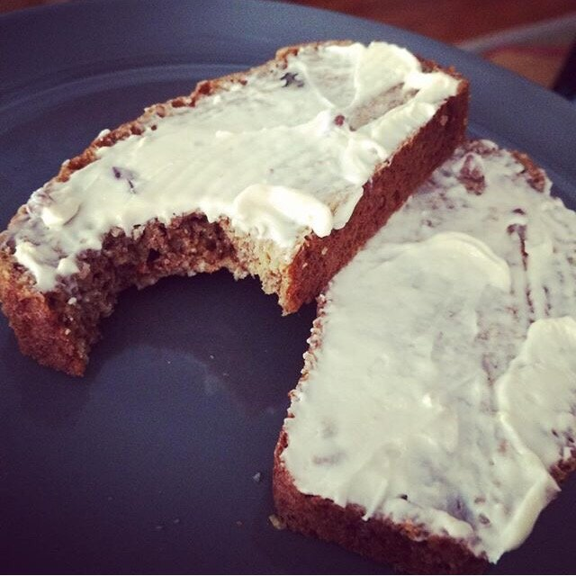
Carrot Cake Bread || posted by Camille on Instagram
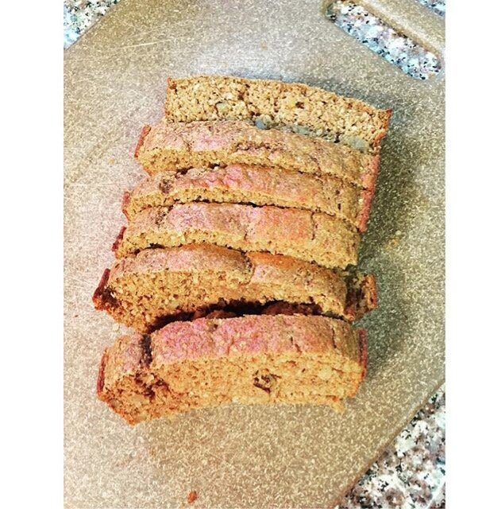
Carrot Cake Bread || posted by Shelby on Instagram
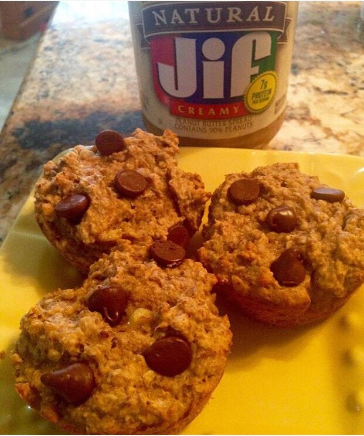
Peanut Butter Banana Muffins || posted by Alyssa on Instagram
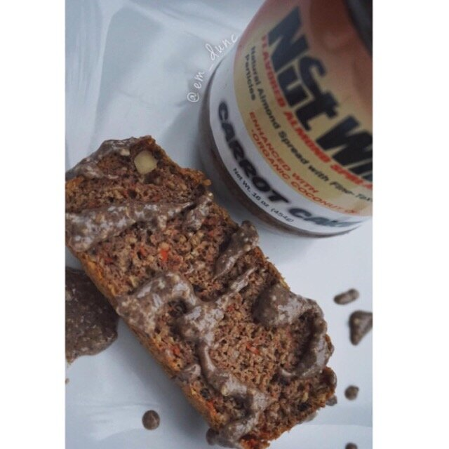
Carrot Cake Bread || posted by Em Dunc on Instagram
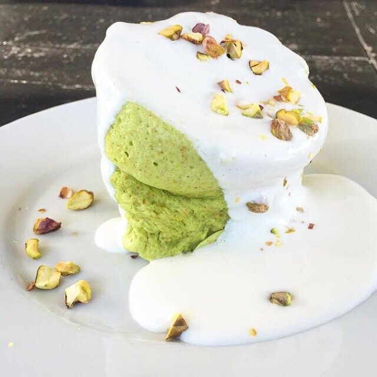
White Chocolate Pistachio Mugcake || posted by Dena on Instagram
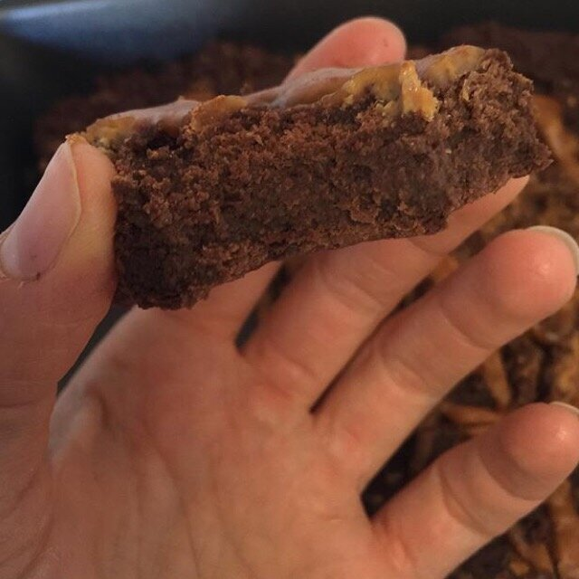
Peanut Butter Crunch Brownies || posted by Cassidy on Instagram
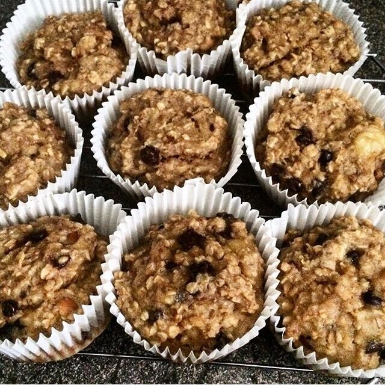
Peanut Butter Banana Muffins || posted by Kimberley on Instagram
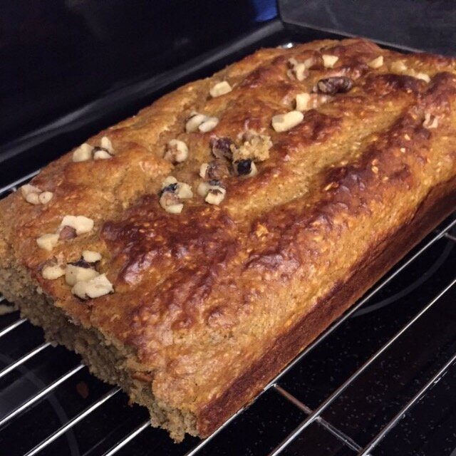
Carrot Cake Bread || posted by Mariah on Twitter